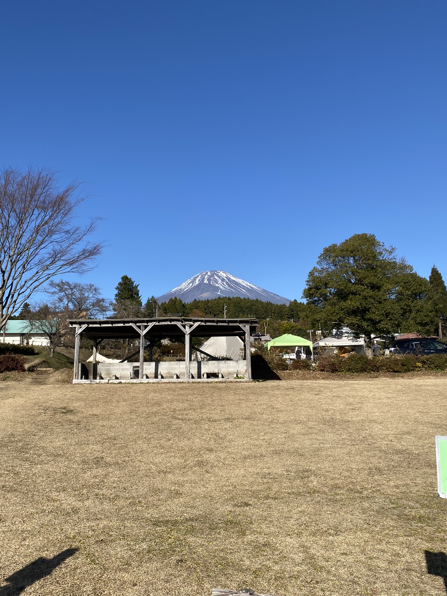

ABOUT

佐藤 悠介 satou yusuke
1998年3月7日生まれ。宮城県仙台市出身。東海大学卒。
2020年より新卒でIT業界で働いている。
IT業界で新卒未経験で入社しプログラミング、
チームの進捗管理、客先折衝等の役割を担ってきた。
現在は、アプリチームのリーダとして10名程の管理を行い、
主にベンダーへの進捗報告等の役割を担っている。
アニメ鑑賞、キャンプ、筋トレがライフワーク。
最近は、webデザインの勉強を行っており、
まずは副業として月5万円の収益を目標として活動を目指している。